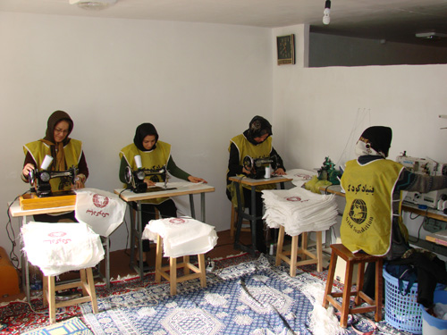
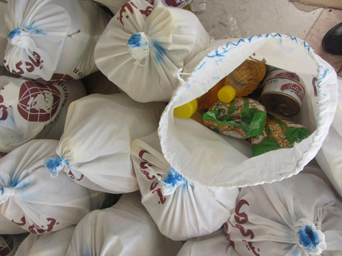

جمع آوری و بسته بندی کمک های مردمی
پس از وقوع زلزله دلخراش آذربایجان، بنیاد کودک نقشی پر رنگ و سازنده در این حادثه ایفا کرد و با یاری هموطنان و هنرمندان کمک های خود را به مردم آسیب دیده در این منطقه ارسال کرد. به دلیل تخریب بناها و راه ها، امکان کمک رسانی غذایی به هموطنان بسیار دشوار بود. بنیاد کودک با یاری هموطنان در بسیاری از مناطق زلزله زده موفق به تهیه و توزیع کمک های مردمی شد. بسته های مواد غذایی شامل گوشت، برنج، ماکارونی، حبوبات، روغن، رب و انواع کنسروها بخشی از نیاز مردم را در آن شرایط سخت تامین کرد.
نقش داوطلبان و همیاران بنیاد کودک در جمع آوری و آماده سازی کمک های مردمی بسیار پر رنگ بود. از همه بیشتر حضور چشمگیر هنرمندان و سینماگران کشور بود. حضور حامد بهداد در بنیاد کودک و فراخوان مسعود رایگان و رویا تیموریان برای جمع آوری کمک های مردمی انبوه دشواری ها را آسان کرد و با همت بلند ایرانیان کودکان آسیب دیده ی آذربایجان بار دیگر طعم شیرین زندگی را چشیدند.
 